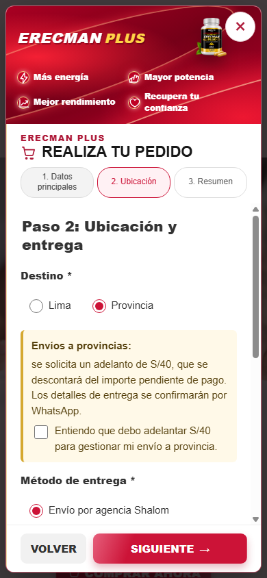
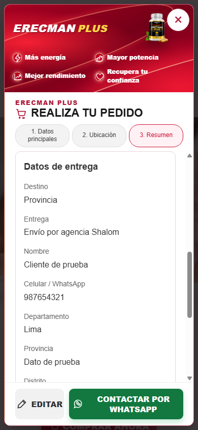

Provincia y resumen móvil
Provincia: agencia Shalom o courier. Entrega a domicilio disponible para Lima. El resumen móvil muestra cada etiqueta encima del dato.
Probar formulario · 54 comprobaciones correctas · 15 pruebas funcionales correctas
Opciones para Provincia

Datos de entrega en móvil
